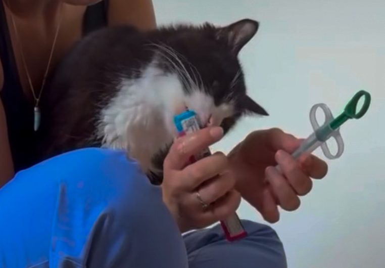
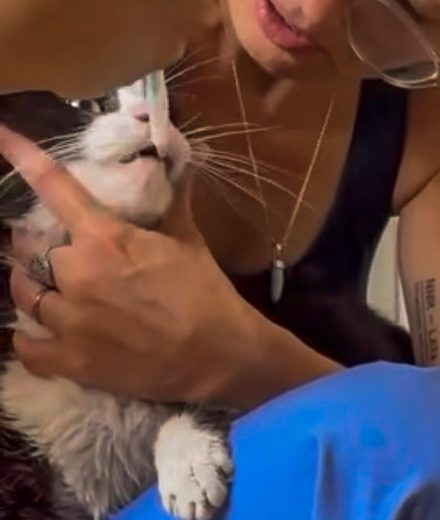

💊 Visite de soins
Vous n'arrivez pas à lui donner son traitement
Le vétérinaire vous a montré le geste au cabinet. Ça avait même l'air assez simple.
Puis vous rentrez chez vous, et c'est à vous de le faire. Sur le chat que vous connaissez par cœur, et que vous n'avez aucune envie de brusquer. Sur celui qui recrache le comprimé, disparaît sous le lit, ou comprend ce qui se prépare avant même que vous ayez ouvert la boîte.
Je viens chez vous, et on lui donne son traitement ensemble. Puis vous le refaites, avec moi à côté.
Pourquoi me faire venir
Vous avez peur de lui faire mal
Il est déjà malade, parfois fatigué ou douloureux. La dernière chose dont vous avez envie, c'est de lui ajouter du stress.
Alors vous hésitez. Vous relâchez dès qu'il se débat. Vous recommencez. Et plus vous l'aimez, plus il peut être difficile de faire un geste qu'il n'aime pas.
Au cabinet, ça marchait. Chez vous, plus du tout.
Le vétérinaire lui a donné son comprimé en quelques secondes.
À la maison, votre chat recrache, tourne la tête, serre les mâchoires, se cache ou vous repère à 3 mètres avec votre médicament dans la main.
C'est très différent de regarder quelqu'un faire, et de devoir le faire vous-même sur votre chat.
Chaque prise devient une épreuve
Vous essayez de ne pas le brusquer. Vous attendez. Vous recommencez un peu plus tard. Vous changez de technique.
Et un simple comprimé finit par prendre une place énorme dans la journée, pour vous comme pour lui.
Vous avez le matériel, mais pas le mode d'emploi
Un lance-pilule, par exemple, peut beaucoup aider. Encore faut-il savoir le tenir, positionner le chat et faire le geste correctement.

Vous n'êtes pas un cas à part
Ce que vivent les propriétaires qui donnent un traitement
Sur 2 507 propriétaires interrogés dans 57 pays1
Dans une autre enquête, la dose prescrite n'a pas pu être donnée du tout pour un quart des médicaments.2 Et la moitié des propriétaires disent qu'on ne leur a jamais montré comment faire.1
Pourquoi aller vite peut être plus doux
Quand on aime son chat, le réflexe est souvent d'y aller très doucement. De s'arrêter dès qu'il proteste. Puis de recommencer.
Le problème, c'est que 5 ou 6 tentatives prudentes peuvent transformer 30 secondes désagréables en 10 ou 15 minutes de stress. Et parfois, le médicament n'est toujours pas pris.
Un geste court, préparé et maîtrisé peut être beaucoup moins pénible pour lui.
Le but n'est jamais de « gagner » contre votre chat. Le but est que ce moment nécessaire prenne le moins de place possible dans sa journée, puis qu'il puisse retourner à sa vie de chat.
Un comprimé avalé à sec ne descend pas
Donné seul, sans rien derrière, un comprimé reste coincé dans l'œsophage. 2 équipes l'ont filmé chez des chats en bonne santé.
30 secondes après, aucun comprimé n'était arrivé à l'estomac. 5 minutes après, 1 sur 3 seulement.3 Les gélules, elles, se bloquent 1 fois sur 2.4
Il suffit de très peu pour que ça passe. Un peu d'eau juste après, et 9 comprimés sur 10 sont descendus en 30 secondes.3 Une bouchée de nourriture fait la même chose.4 Une friandise prévue pour ça aussi.5
Sinon, le comprimé reste contre la paroi et l'irrite. Des chats ont fini avec un rétrécissement de l'œsophage, après un antibiotique donné sec.67
Jusqu'à ce que vous sachiez faire
Je préfère que vous n'ayez plus besoin de moi.
Le plus souvent, un passage suffit. Parfois il en faut un second. Certains chats sont très faciles à manipuler, d'autres beaucoup moins, et aucune technique ne transforme leur caractère en 1 heure.
Si je vois que le soin ne peut pas être réalisé correctement et sans risque à domicile, je vous le dirai. À ce moment-là, il faut revenir vers le vétérinaire et chercher avec lui une autre solution, voire une prise en charge au cabinet pendant le traitement.
Je vous le dirai vite, plutôt que de vous laisser multiplier les tentatives alors que votre chat et vous êtes déjà en difficulté.
Comment ça se passe
Vous m'expliquez ce qui coince
Écrivez-moi sur WhatsApp, ou passez par le formulaire de réservation en choisissant « Autre besoin à préciser » comme fréquence.
Dites-moi ce qui a été prescrit : comprimé, pommade, gouttes ou aérosol. Et surtout, racontez-moi ce qui se passe quand vous essayez.
Il recrache ? Il fuit ? Il mord ? Vous n'arrivez pas à le maintenir ?
C'est ce qui m'aidera le plus à préparer le passage.
On cale un passage
Je vous propose un créneau, si possible à l'heure habituelle de la prise.
Vous n'avez pas besoin de préparer une mise en scène particulière. Il me faut simplement votre chat, son traitement et, si vous en utilisez, le matériel habituel.
On le fait ensemble
Je commence par regarder votre chat et la façon dont il réagit à la manipulation.
Je vous montre ensuite comment je m'y prends avec lui.
Puis c'est à vous. Je peux corriger une position, une hésitation, une main placée au mauvais endroit ou simplement vous montrer à quel moment agir.
Le but est qu'à la prochaine prise, vous sachiez quoi faire sans moi.

Ce que je ne fais pas
Mon rôle est de vous aider à réaliser correctement le geste qui vous a déjà été prescrit et montré.
S'il y a un doute sur l'ordonnance, un effet indésirable ou une évolution de l'état de votre chat, la bonne personne à appeler est votre vétérinaire.
Je peux couper les griffes, si vous me le signalez avant la visite : j'ai le matériel qu'il faut. Le démêlage et la tonte, non : c'est le travail d'un toiletteur.
Ces limites sont également celles que j'applique pendant mes gardes. Elles figurent dans mon règlement sanitaire, validé par mes vétérinaires sanitaires.
Les sources de cette page
- Taylor S., Caney S., Bessant C. et Gunn-Moore D., Online survey of owners' experiences of medicating their cats at home, Journal of Feline Medicine and Surgery, 2022. Enquête auprès de 2 507 propriétaires dans 57 pays. Article intégral, en anglais, nouvelle fenêtre
- Sivén M. et coll., Difficulties in administration of oral medication formulations to pet cats : an e-survey of cat owners, The Veterinary Record, 2017. 46 propriétaires, 67 médicaments. Article, en anglais, nouvelle fenêtre
- Westfall D.S., Twedt D.C., Steyn P.F. et coll., Evaluation of esophageal transit of tablets and capsules in 30 cats, Journal of Veterinary Internal Medicine, 2001. Suivi radioscopique chez 30 chats. Résumé sur PubMed, en anglais, nouvelle fenêtre
- Graham J.P., Lipman A.H., Newell S.M. et Roberts G.D., Esophageal transit of capsules in clinically normal cats, American Journal of Veterinary Research, 2000. 12 chats, 36 examens. Article, en anglais, nouvelle fenêtre
- Bennett A.D., MacPhail C.M., Gibbons D.S. et Lappin M.R., A comparative study evaluating the esophageal transit time of eight healthy cats when pilled with the FlavoRx pill glide versus pill delivery treats, Journal of Feline Medicine and Surgery, 2010. Étude sur 8 chats. Article, en anglais, nouvelle fenêtre
- German A.J., Cannon M.J., Dye C. et coll., Oesophageal strictures in cats associated with doxycycline therapy, Journal of Feline Medicine and Surgery, 2005. Quatre cas décrits. Article, en anglais, nouvelle fenêtre
- Beatty J.A., Swift N., Foster D.J. et Barrs V.R.D., Suspected clindamycin-associated oesophageal injury in cats : five cases, Journal of Feline Medicine and Surgery, 2006. Cinq cas décrits. Article, en anglais, nouvelle fenêtre